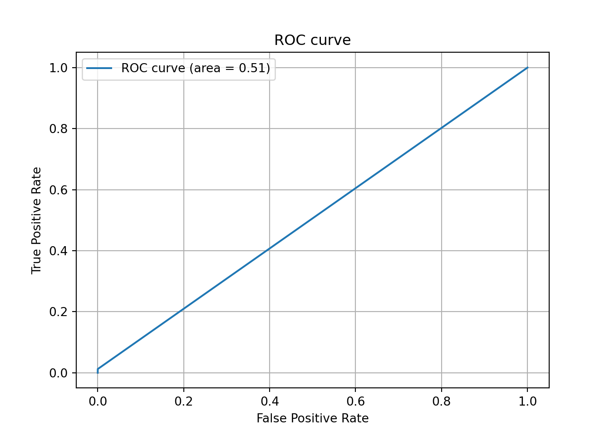
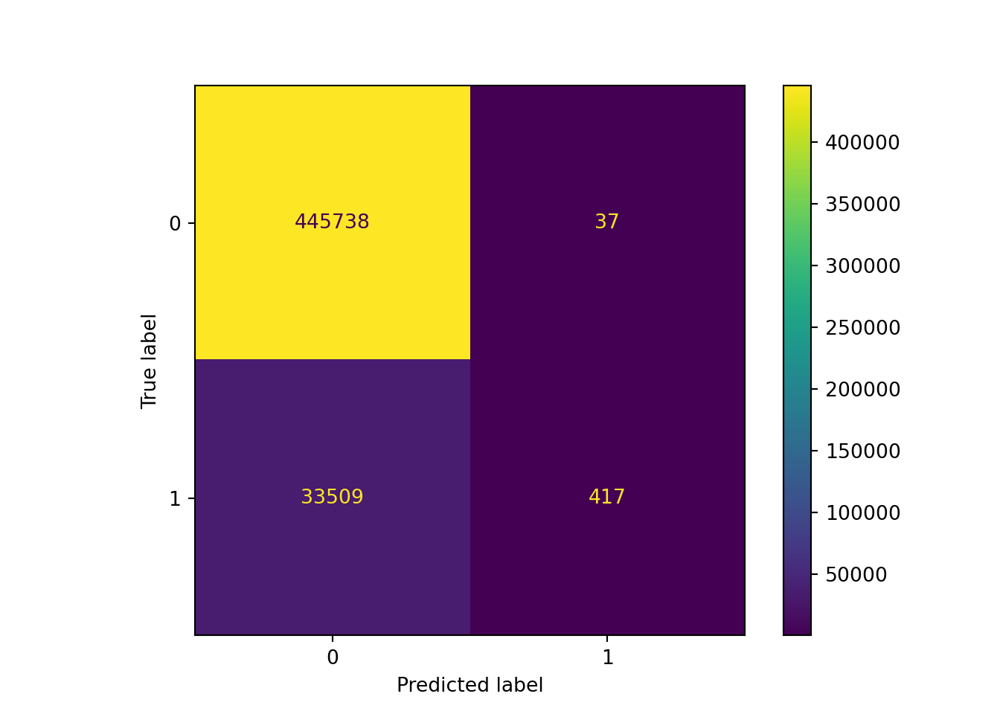
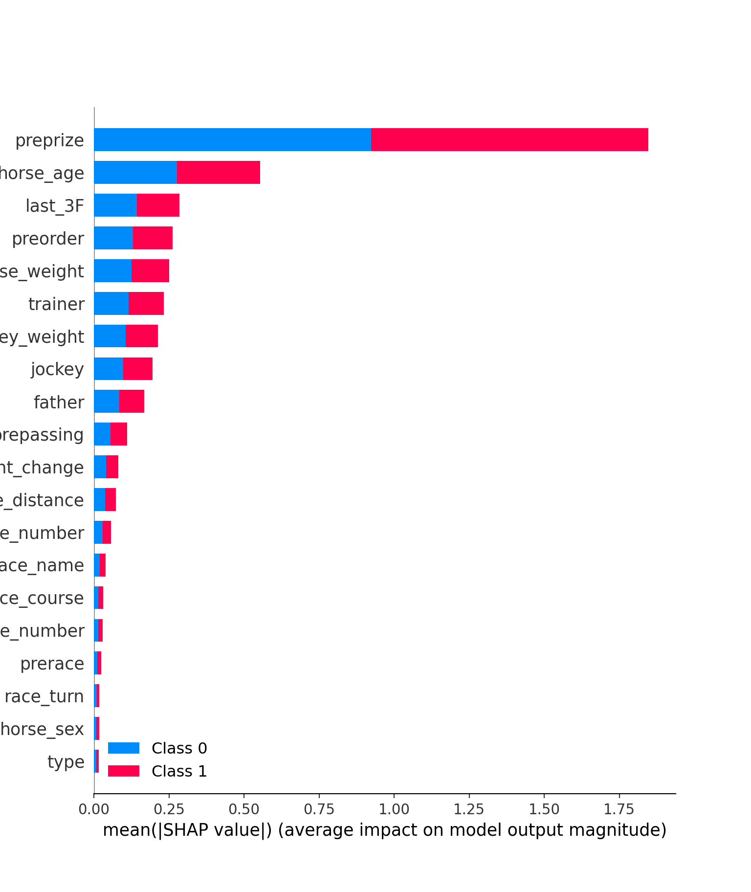
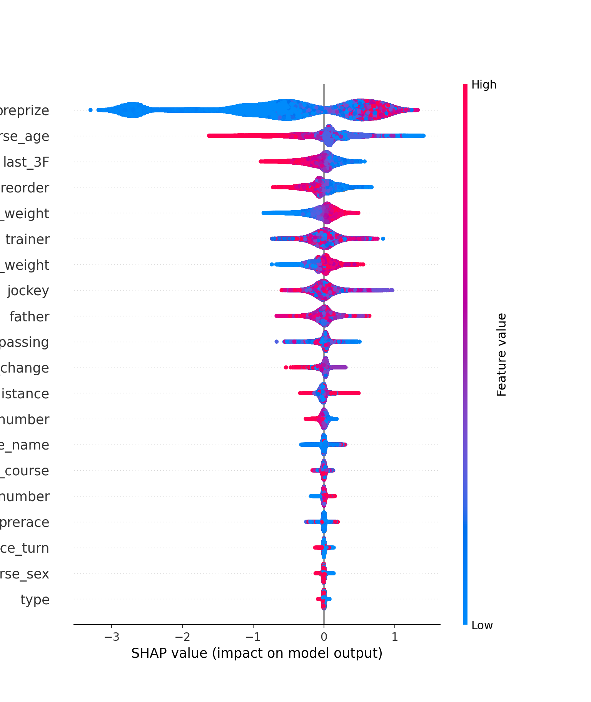
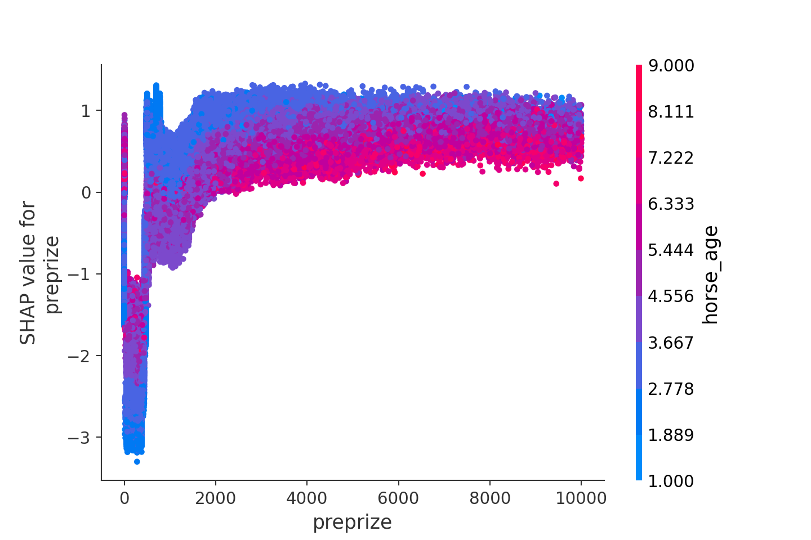
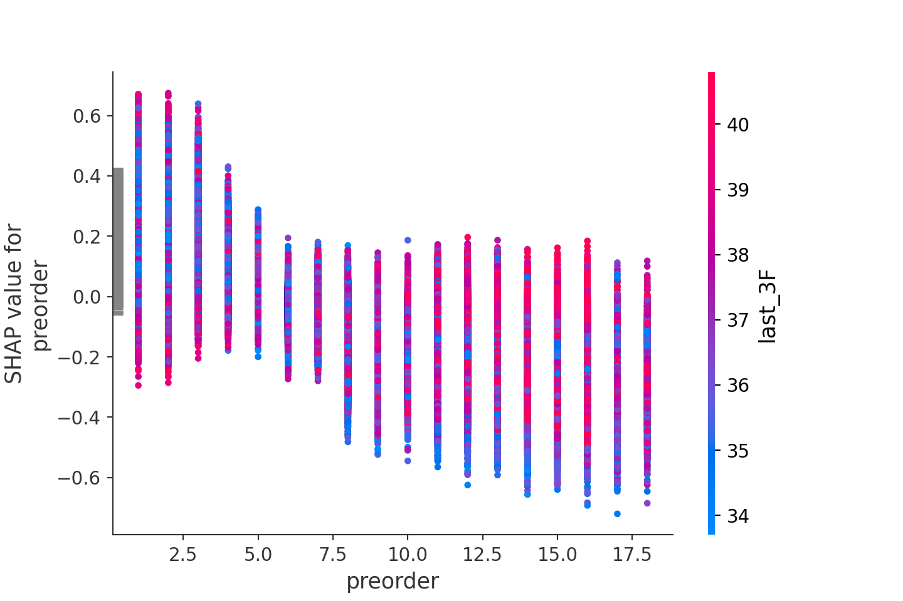

Predicting Horse Racing Results Using LightGBM
Hi. It’s been quite a while, but I’d like to create a model to predict the outcome of a race based on race result data previously collected from yahoo.keiba in order to study Python.
1.Data Import
First, I get the race result data saved from sqlite to the pandas data frame.
conn = sqlite3.connect(r'C:\hogehoge\horse_data.db')
sql = r'SELECT * FROM race_result'
df = pd.read_sql(con=conn,sql=sql)
Let’s check the contents of the data. The columns are as follows, with order being the order of arrival.
df.columns
## Index(['order', 'frame_number', 'horse_number', 'trainer', 'passing_rank',
## 'last_3F', 'time', 'margin', 'horse_name', 'horse_age', 'horse_sex',
## 'horse_weight', 'horse_weight_change', 'brinker', 'jockey',
## 'jockey_weight', 'jockey_weight_change', 'odds', 'popularity',
## 'race_date', 'race_course', 'race_name', 'race_distance', 'type',
## 'race_turn', 'race_condition', 'race_weather', 'colour', 'owner',
## 'farm', 'locality', 'horse_birthday', 'father', 'mother', 'prize',
## 'http'],
## dtype='object')
Checking the contents of the order, you’ll see that many of the orders have parentheses () and that they are recognized by the letter type because of the presence of cancellation, abort and disqualification. By the way, the order in parentheses is the order of entry, which means that the horse has been disqualified for interfering with another horse’s running (http://www.jra.go.jp/judge/).
df.loc[:,'order'].unique()
## array(['1', '7', '2', '8', '5', '15', '6', '12', '11', '14', '3', '13',
## '4', '16', '9', '10', '取消', '中止', '除外', '17', '18', '4(3)', '2(1)',
## '3(2)', '6(4)', '失格', '9(8)', '16(6)', '12(12)', '13(9)', '6(3)',
## '10(7)', '6(5)', '9(3)', '11(8)', '13(2)', '12(9)', '14(7)',
## '10(1)', '16(8)', '14(6)', '10(3)', '12(1)', '13(6)', '7(1)',
## '12(6)', '6(2)', '11(2)', '15(6)', '13(10)', '14(4)', '7(5)',
## '17(4)', '9(7)', '16(14)', '12(11)', '14(2)', '8(2)', '9(5)',
## '11(5)', '12(7)', '11(1)', '12(8)', '7(4)', '5(4)', '13(12)',
## '14(3)', '10(2)', '11(10)', '18(3)', '10(4)', '15(8)', '8(3)',
## '5(1)', '10(5)', '7(3)', '5(2)', '9(1)', '13(3)', '16(11)',
## '11(3)', '18(15)', '11(6)', '10(6)', '14(12)', '12(5)', '15(14)',
## '17(8)', '18(6)', '4(2)', '18(10)', '16(7)', '13(1)', '16(10)',
## '15(7)', '9(4)', '15(5)', '12(3)', '8(7)', '15(2)', '12(10)',
## '14(9)', '3(1)', '6(1)', '14(5)', '15(4)', '11(4)', '12(4)',
## '16(4)', '9(2)', '13(5)', '12(2)', '15(1)', '4(1)', '14(13)',
## '14(1)', '13(7)', '5(3)', '8(6)', '15(13)', '7(2)', '15(11)',
## '10(9)', '11(9)', '8(4)', '15(3)', '13(4)', '16(12)', '16(5)',
## '18(11)', '10(8)', '18(8)', '14(8)', '16(9)', '8(5)', '8(1)',
## '14(11)', '9(6)', '16(13)', '16(15)', '11(11)', '15(10)', '7(6)'],
## dtype=object)
Let’s fix this first. Remove the parentheses and change the type to int, and add the arrival order as a new column arriving order.
df['arriving order'] = df[df.order.str.contains(r'\d*\(\d*\)',regex=True)]['order'].replace(r'\d+\(',r'',regex=True).replace(r'\)',r'',regex=True).astype('float64')
df['arriving order'].unique()
## array([nan, 3., 1., 2., 4., 8., 6., 12., 9., 7., 5., 10., 14.,
## 11., 15., 13.])
df['order'] = df['order'].replace(r'\(\d+\)',r'',regex=True)
df = df[lambda df: ~df.order.str.contains(r'(取消|中止|除外|失格)',regex=True)]
## C:\Users\aashi\ANACON~1\lib\site-packages\pandas\core\strings.py:1954: UserWarning: This pattern has match groups. To actually get the groups, use str.extract.
## return func(self, *args, **kwargs)
df['order'] = df['order'].astype('float64')
df['order'].unique()
## array([ 1., 7., 2., 8., 5., 15., 6., 12., 11., 14., 3., 13., 4.,
## 16., 9., 10., 17., 18.])
We were able to process it into a clean float type. Now let’s move on to preprocessing the last three furlongs' times. We use the last three furlongs' time of the last race for our prediction.
import numpy as np
df['last_3F'] = df['last_3F'].replace(r'character(0)',np.nan,regex=False).astype('float64')
df['last_3F'] = df.groupby('horse_name')['last_3F'].shift(-1)
Also include the previous race and rankings and any additional positions in the dataset.
df['prerace'] = df.groupby('horse_name')['race_name'].shift(-1)
df['preorder'] = df.groupby('horse_name')['order'].shift(-1)
df['prepassing'] = df.groupby('horse_name')['passing_rank'].shift(-1)
The accumulated prize money earned at the time of running will also be added.
df['preprize'] = df.groupby('horse_name')['prize'].shift(-1)
df['preprize'] = df['preprize'].fillna(0)
df['margin'] = df.groupby('horse_name')['margin'].shift(-1)
We also add missing values, data type fixes, and label encoding for categorical data.
df['horse_weight'] = df['horse_weight'].astype('float64')
df['margin'] = df['margin'].replace(r'character(0)',np.nan,regex=False)
df['horse_age'] = df['horse_age'].astype('float64')
df['horse_weight_change'] = df['horse_weight_change'].astype('float64')
df['jockey_weight'] = df['jockey_weight'].astype('float64')
df['race_distance'] = df['race_distance'].replace(r'm',r'',regex=True).astype('float64')
df['race_turn'] = df['race_turn'].replace(r'character(0)',np.nan,regex=False)
df.loc[df['order']!=1,'order'] = 0
df['race_turn'] = df['race_turn'].fillna('missing')
df['colour'] = df['colour'].fillna('missing')
df['prepassing'] = df['prepassing'].fillna('missing')
df['prerace'] = df['prerace'].fillna('missing')
df['father'] = df['father'].fillna('missing')
df['mother'] = df['mother'].fillna('missing')
from sklearn import preprocessing
cat_list = ['trainer', 'horse_name', 'horse_sex', 'brinker', 'jockey', 'race_course', 'race_name', 'type', 'race_turn', 'race_condition', 'race_weather', 'colour', 'father', 'mother', 'prerace', 'prepassing']
for column in cat_list:
target_column = df[column]
le = preprocessing.LabelEncoder()
le.fit(target_column)
label_encoded_column = le.transform(target_column)
df[column] = pd.Series(label_encoded_column).astype('category')
## LabelEncoder()
## LabelEncoder()
## LabelEncoder()
## LabelEncoder()
## LabelEncoder()
## LabelEncoder()
## LabelEncoder()
## LabelEncoder()
## LabelEncoder()
## LabelEncoder()
## LabelEncoder()
## LabelEncoder()
## LabelEncoder()
## LabelEncoder()
## LabelEncoder()
## LabelEncoder()
2. Creating a Model
Now, let’s try to build a prediction model with LightGBM. The optuna LightGBM is used to perform hyperparameter tuning and calculate the confusion matrix, as well as the correctness rate of test data calculated with the trained model.
import optuna.integration.lightgbm as lgb
from sklearn.model_selection import train_test_split
y = df['order']
x = df.drop(['order','passing_rank','time','odds','popularity','owner','farm','locality','horse_birthday','http','prize','race_date','margin'],axis=1)
X_train, X_test, y_train, y_test = train_test_split(x, y)
X_train, x_val, y_train, y_val = train_test_split(X_train, y_train)
lgb_train = lgb.Dataset(X_train, y_train)
lgb_eval = lgb.Dataset(x_val, y_val)
lgb_test = lgb.Dataset(X_test, y_test, reference=lgb_train)
lgbm_params = {
'objective': 'binary',
'boost_from_average': False
}
model = lgb.train(lgbm_params, lgb_train, categorical_feature = cat_list, valid_sets = lgb_eval, num_boost_round=100, early_stopping_rounds=20, verbose_eval=False)
def calibration(y_proba, beta):
return y_proba / (y_proba + (1 - y_proba) / beta)
sampling_rate = y_train.sum() / len(y_train)
y_proba = model.predict(X_test, num_iteration=model.best_iteration)
y_proba_calib = calibration(y_proba, sampling_rate)
y_pred = np.vectorize(lambda x: 1 if x > 0.49 else 0)(y_proba_calib)
Visualization part.
from sklearn.metrics import confusion_matrix, ConfusionMatrixDisplay, accuracy_score, precision_score, recall_score, f1_score, roc_curve, auc
import matplotlib.pyplot as plt
import seaborn as sns
# Calculating the AUC (Area Under the Curve)
fpr, tpr, thresholds = roc_curve(y_test, y_pred)
auc = auc(fpr, tpr)
# Plot the ROC curve
plt.plot(fpr, tpr, label='ROC curve (area = %.2f)'%auc)
plt.legend()
plt.title('ROC curve')
plt.xlabel('False Positive Rate')
plt.ylabel('True Positive Rate')
plt.grid(True)
plt.show()

plt.close()
# Generate a Confusion Matrix
ConfusionMatrixDisplay(confusion_matrix(y_test, y_pred)).plot()
## <sklearn.metrics._plot.confusion_matrix.ConfusionMatrixDisplay object at 0x00000000C690E288>
plt.show()

plt.close()
accuracy_score(y_test, y_pred)
## 0.9300689387764461
precision_score(y_test, y_pred)
## 0.9185022026431718
The accuracy_score (prediction accuracy) is over 90% and the precision_Score (the percentage of data correct that predicted positive = 1) is good.
recall_score(y_test, y_pred)
## 0.012291457878912929
f1_score(y_test, y_pred)
## 0.02425828970331588
On the other hand, we can see that the recall_score (percentage of sample that was predicted to be positive and actually true) is low and the false negative is high. As a result, the F1 value is also low. In the case of the horse racing prediction model, high false negatives are better than high false positives, but we have to work harder to reduce the false negatives to increase the return rate. This is an issue for the future. In the next section, I will use the shapley value to do a factorization.
3. Interpreting results in shap
import shap
shap.initjs()
## <IPython.core.display.HTML object>
explainer = shap.TreeExplainer(model)
## Setting feature_perturbation = "tree_path_dependent" because no background data was given.
shap_values = explainer.shap_values(X_test)
## LightGBM binary classifier with TreeExplainer shap values output has changed to a list of ndarray
First, we’ll see how important each feature is. The summary_plot method is used.
shap.summary_plot(shap_values, X_test)

The horizontal axis represents the average importance of each feature (absolute value of the shap value), and we can see that preprize (amount of money won up to the last race), horse_age, and preorder (order of finish in the last race) are all important in predicting the winner of the race. The same is true for horse_age. However, it is not possible to evaluate it qualitatively just because it is important. For example, if the relationship between a higher preprize and a higher probability of being first is confirmed, that can be important information. Then you can check it. The summary_plot method is used.
shap.summary_plot(shap_values[1], X_test)

The above figure also shows the importance of each feature (not absolute values in this case). In this case, the importance of each feature is shown in the violin plot and is colored according to the size of the feature value. For example, in the case of preprize, the red distribution occurs only where the horizontal axis is greater than 0, and this is where the feature value of preprize is large. This means that we can take the obvious interpretation that the probability of finishing first increases on average with the amount of money won up to the previous race. Other factors such as horse_age, preorder, and last_3F seem to increase the probability of finishing first as the feature value becomes smaller, while horse_weight and jokey_weight seem to increase the probability of finishing first as the feature value becomes larger. On the other hand, there is no qualitative relationship between the two variables.
Next, let’s look at the relationship between feature value and probability in more detail. We saw earlier that preprize increases the probability of being the first one to arrive as the feature value increases. But we don’t know if the increase is linear, exponential, or diminishing as in dependence on \(log x\). Let’s find out with the dependence_plot.
shap.dependence_plot(ind="preprize", shap_values=shap_values[1], features=X_test)

The above figure plots the approximate form of the learned LightGBM as a function of preprize. As we saw earlier, the probability of being the first one to be placed increases as the feature value increases. However, the increase is gradual and diminishing, and it almost reaches its peak at over 20 million yen. Also, in the figure above, we have color-coded by HORSE_AGE, so you can see the relationship with PREPRIZE. As you might expect, the probability of horses with high preprize is higher for the youngest horses to win the race.
Let’s also check the dependence_plot of the preorder.
shap.dependence_plot(ind="preorder", shap_values=shap_values[1], features=X_test)

As expected, the higher the order of the last race, the higher the probability of finishing first. I also checked the relationship with the time of last_3F, but it doesn’t seem to be very relevant here.
4. Summary
I made a prediction model of horse racing using LightGBM. As you would expect of Light GBM, the prediction accuracy is very high. Also, the shap value was successfully used to detect important features. This will help us understand how LightGBM feels and improve our modeling accuracy as we continue to find better features.